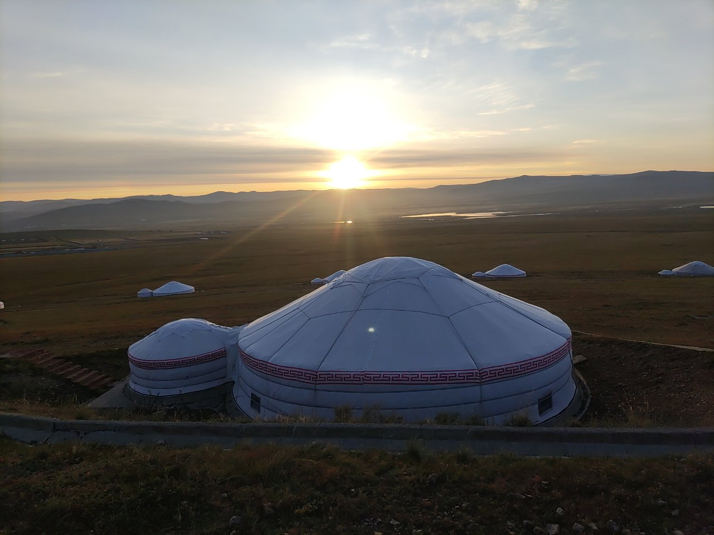

２０２３年９月、モンゴル旅行日記
El diario de Mongolia
久しぶりの海外だから近場で！

Un viaje a Mongolia 1 (Salida) ★
Un viaje a Mongolia 2 (Ulán Bator) ★
Un viaje a Mongolia 3 (El Parque Nacional Hustai) ★
Un viaje a Mongolia 4 (HS Khan Resort) ★
Un viaje a Mongolia 5 (El Parque Nacional Terelj) ★
Un viaje a Mongolia 6 (Terelj Lodge) ★
Un viaje a Mongolia 7 (La última actividad) ★
Un viaje a Mongolia 8 (El camino de vuelta) ★
Hoteles en Mongolia
Ulán Bator
Hotel Nine
Tov aimag
HS Khaan Resort Hotel
Terelj
Terelj Lodge
Seúl
Golden Tulip Incheon Airport Hotel & Suites